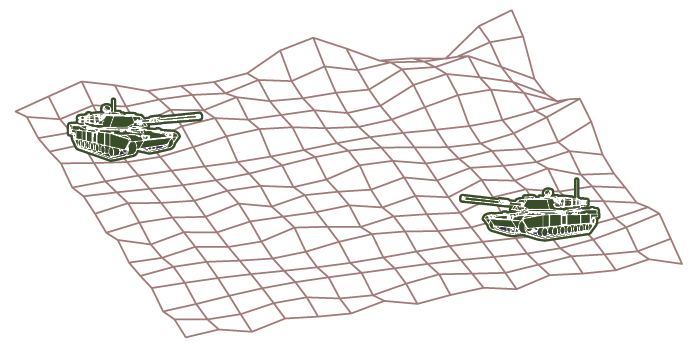

Two tanks are participating in a battle simulation. Tank A is at point \((325, 810, 561)\) and tank B is positioned at point \((765, 675, 599)\). (a) Find parametric equations for the line of sight between the tanks. (b) If we divide the line of sight into 5 equal segments, the elevations of the terrain at the four intermediate points from tank A to tank B are 549, 566, 586, and 589. Can the tanks see each other?